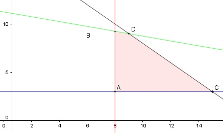

Aufgabe 65 Ein Zweiradgeschäft kauft Fahrräder und Mopeds unter folgenden Bedingungen auf Vorrat. Das Lager fasst 18 Zweiräder. Es sollen mindestens 8 Fahrräder und 3 Mopeds sein. Ein Fahrrad kostet 200 €, ein Moped 800 €. Es stehen 9 000 € zur Verfügung. Stellen Sie ein Ungleichungssystem auf, und zeichnen Sie das Planungsgebiet. x = Anzahl der Fahrräder y = Anzahl der Mopeds Bedingungen: 1. x ≥ 8 x ∈ ℕ 2. y ≥ 3 y ∈ ℕ 3. x + y ≤ 18 4. 200x + 600y ≤ 9 000

Die Eckpunkte A, B, C und D bestimmen das Planungsgebiet, das alle Ungleichungen erfüllt. Eckpunkt A: Randgerade 1. geschnitten mit Randgerade 2. (8|3) Eckpunkt B: Randgerade 1. geschnitten mit Randgerade 4. 200 * 8 + 800y = 9000 |-1 600 800y = 7 400 |:800 y = 9,25 B(8|9,25) Eckpunkt C: Randgerade 2. geschnitten mit Randgerade 3. x + 3 = 18 |-3 x = 15 C(15|3) Eckpunkt D: Randgerade 3. geschnitten mit Randgerade 4. x + y = 18 |-y x = 18 - y Eingesetzt: 200(18 - y) + 800y = 9 000 3 600 - 200y + 800y = 9 000 |-3 600 600y = 5 400 |:600 y = 9 x = 18 - 9 = 9 D(9|9) Mögliche Käufe: 15 * 200 + 3 * 800 = 3 000 + 2 400 = 5 400 € 9 * 200 + 9 * 800 = 1 800 + 7 200 = 9 000 €